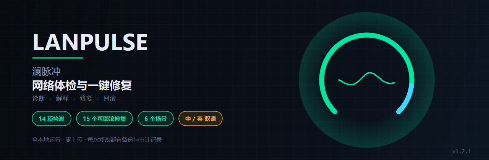
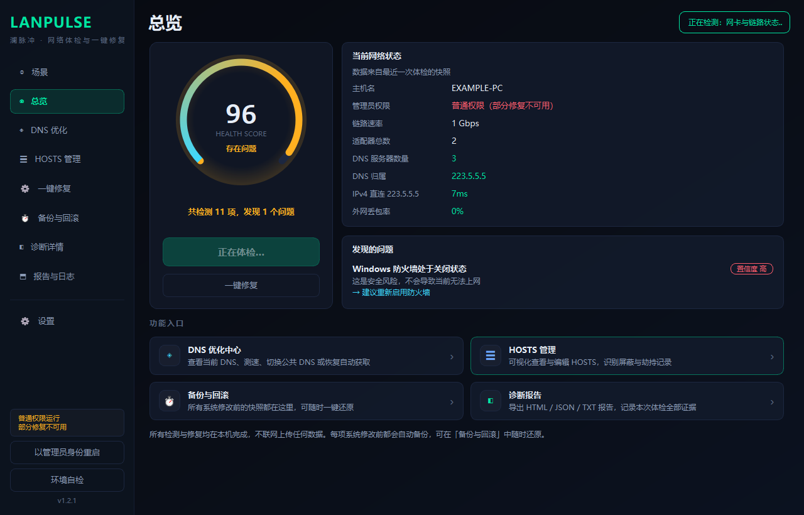
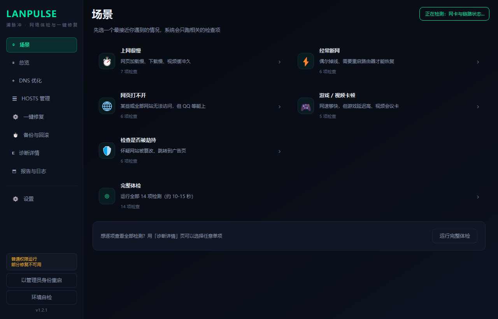
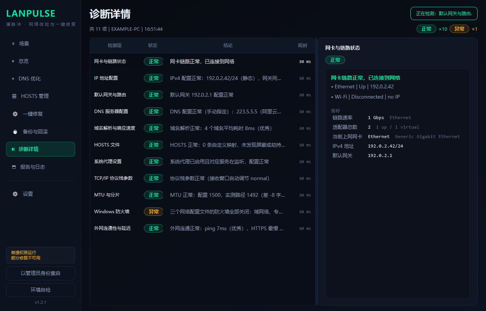
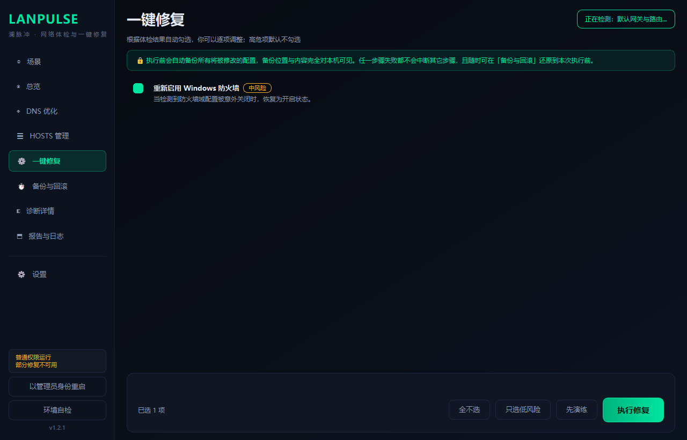
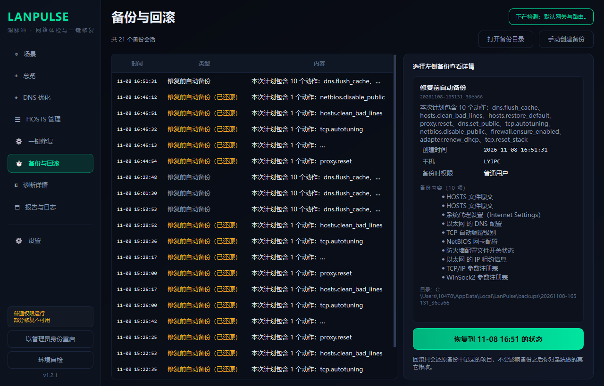
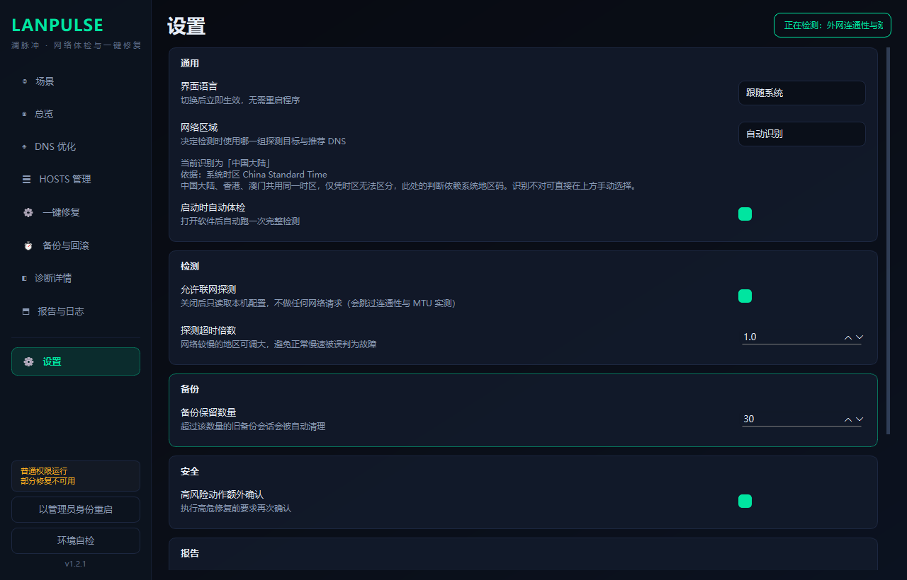

先备份、后修改
所有写操作前必须先完成备份，备份失败则整轮中止、一条都不改。 不会出现「改了一半没有退路」的现场。

不是又一个「一键修复」黑盒。LanPulse 先把 14 项检测做全， 用 10 条根因规则给出带证据链的结论， 再让你决定要不要修——每一次修改都先备份、都能回滚。
当前版本 v1.2.2 · 开源 MIT · 查看源码
不是宣传语，是实现方式本身
所有写操作前必须先完成备份，备份失败则整轮中止、一条都不改。 不会出现「改了一半没有退路」的现场。
备份是纯文本与 .reg 文件，软件本身坏了也能手工还原。
回滚不依赖程序运行时状态。
无遥测、无账号、无云端。所有探测只在本机发起， 不收集也不上传任何网络数据。
每一项都可单独运行、单独显示，不是一个大而化之的「网络正常」
判断标准是：这个结论如果错了，用户会不会做出错误决策？ 会，就宁可报 SKIP 并说明原因，而不是给一个看起来很确定的假结论。
截图使用合成数据（EXAMPLE-PC / 192.0.2.42），不含任何本机信息






网络工具最容易犯的错，是「用本地的尺子量全世界的网络」。
在法兰克福拿 223.5.5.5 当基准，只会把正常网络判成故障。
| 区域 | 本地 DNS 方案 |
|---|---|
| 中国大陆 | 阿里 + 腾讯 |
| 中国香港 | 香港本地 |
| 中国澳门 | 澳门本地（CTM / MTel） |
| 中国台湾 | 中华电信 HiNet |
| 日本 | 日本本地 |
| 韩国 | 韩国本地 |
| 新加坡 / 东南亚 | 新加坡本地 |
| 印度 / 南亚 | 印度本地 |
| 澳大利亚 / 新西兰 | 澳洲本地 |
| 北美 | 北美本地 |
| 欧洲 | 欧盟公共 DNS（GDPR） |
| 其他地区 | 全球 anycast（阈值最宽松，不误报） |
识别只用本地信号：实测延迟 → 系统时区 → 系统语言。 不请求任何地理 IP 数据库或定位 API。
本项目未购买代码签名证书，Windows 会提示「未知发布者」。
点「更多信息」→「仍要运行」即可。
可对照 Release 页面的 SHA256SUMS.txt 校验文件完整性。